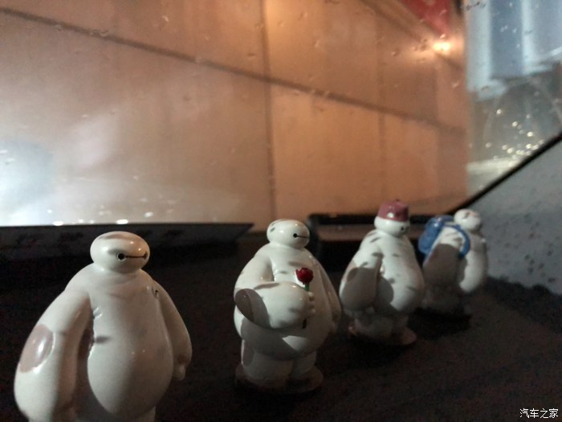

广州白云-Q2L锰石黑预提车日记
汽车之家 2019-03-04大家好，我是新晋Q2L锰石黑车主
一切都要从去年说起，去年跟着我的是我的小凯越——“法拉凯” ，年前本来想做一次保养然后过年的，没想到做了后悬挂突然变硬了好多，过我们院子里面的减速带像钢板一样，我回家给爸妈体验了一下后，都建议我换台车！
，年前本来想做一次保养然后过年的，没想到做了后悬挂突然变硬了好多，过我们院子里面的减速带像钢板一样，我回家给爸妈体验了一下后，都建议我换台车！
如果就是选车过程了........不算太痛苦，我开始本来一直想买1.4T两厢运动型的，超爱他轮毂 ，后来因为我们公司太多人买A3了（我自己就是卖奥迪的.....），我们那边路最近有点坑坑洼洼，我凯越回家经常磕底盘，后面转头看Q2L，Q2L刚刚新出来的车型，外形，配置方面都是有优势的，颜色也丰富很多！价格都比较了一下，区别不大，车型是确定好了！！ 结果在颜色的选择上面，就有点痛苦了......
，后来因为我们公司太多人买A3了（我自己就是卖奥迪的.....），我们那边路最近有点坑坑洼洼，我凯越回家经常磕底盘，后面转头看Q2L，Q2L刚刚新出来的车型，外形，配置方面都是有优势的，颜色也丰富很多！价格都比较了一下，区别不大，车型是确定好了！！ 结果在颜色的选择上面，就有点痛苦了......
第一次拿的是凯拉什蓝，中国特别版，而且论坛很多人买的都是这色，不过我拖回来看了实车，颜色有点暗.....我领导也劝我叫我买个常规色，所以pass掉了.....
第二次拿的是白色，因为是国六的，客户要，就给客户了，，，当时想白色太普通了，还是选个亮眼的颜色吧......
第三次，选择的是猛石黑，其实当时很多同事都建议我买这个色，不过我自己没同意，因为我卖的第一台Q2L就是猛石黑的（我们店第一台Q2L）,最后面实在不想选了，才定下来说猛石黑
结果........
出乎意料.............真的很炫酷！
我把车停在我们店门口，好多客户要这个色，哈哈哈！！档次很高

做奥迪的才知道，45度角拍摄才能显示奥迪最美的风采！
珊瑚橙+凯拉什蓝
我爸妈很喜欢珊瑚橙，我觉得有点女性化就没有选了
凯拉什蓝拍的比较亮，实图有点暗，我姐他们都说不好看哈哈哈！
过户的时候拍的，跟了我不少岁月了.....舍不得
把我的小黑和“法拉凯”放一起，纪念一下
凯越除了方向盘有点硬，其他都很好！
越看越好看！！
尾部，LED真的很显眼
175CM的同事，测距中！
还有两个拳头！
头顶一个拳头！
叫我兄弟来测距！
Q2L其实空间并不会很小，对于我们来说真的刚刚好，在广州好停车，好插队就够了！
我一般一个人用！
和A3布局很内饰！就是屏幕不能收进去！
开光的佛珠！

大鹏展翅！
两下！专门找了个树底下！
黑色的大鹏鸟！
钥匙认证一下，某宝买的，复古钥匙包，手感不错！
昨天晚上银行到账，刚好下雨了，就提车了！
我给客户提车的时候总是安排大红花。。。
自己这次反而没有了
长得不帅，多多海涵！
作为我们店第一买Q2L，希望不会变成我们公司的试驾车，哈哈哈！！
我买的是上市专享型，确实需要的改的地方挺多的！我后续还有更新的！
我的改装项目列表！
①原厂倒车（已装好）
②原厂记录仪（已装好）
③刷导航
④电动座椅+真皮
⑤红色安全带
⑥奥迪迎宾灯
........还有一些小的！！
过两天车子拿去改装，持续更新
自己加装的原厂倒车影像
Q5L上面拆下来的，其实吧，就是图个心安！

某宝找的大白.....
四位大将互我左右，哈哈哈
黑白配不错的！